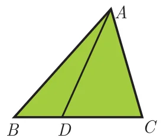
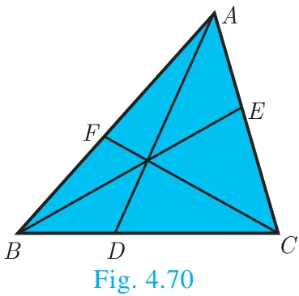
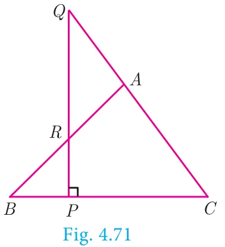
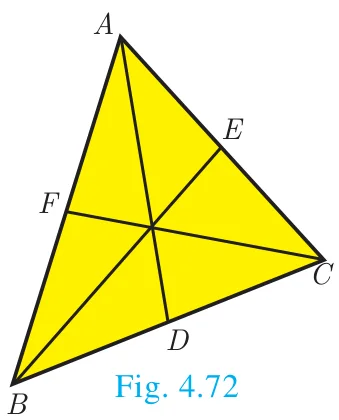
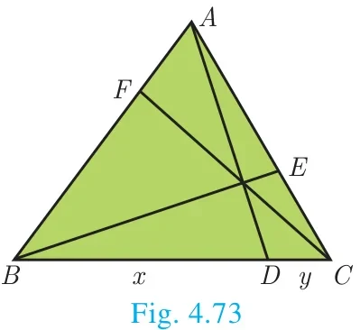
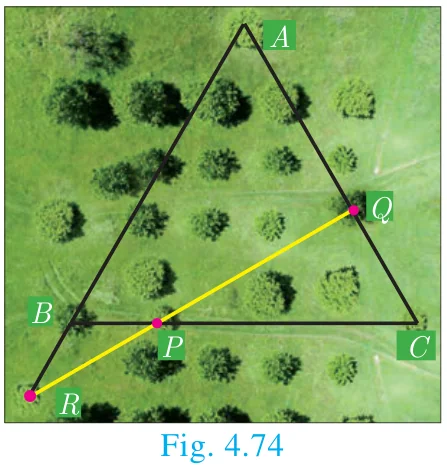

Definition

A cevian is a line segment that extends from one vertex of a triangle to the opposite side. In the diagram, AD is a cevian, from \(A\).
Special cevians
- A median is a cevian that divides the opposite side into two congruent(equal) lengths.
- An altitude is a cevian that is perpendicular to the opposite side.
- An angle bisector is a cevian that bisects the corresponding angle.
Do you know?
The term cevian comes from the name of Italian engineer Giovanni Ceva, who proved a well known theorem about cevians.
Ceva’s Theorem (without proof)
Statement

Let ABC be a triangle and let \(D, E, F\) be points on lines \(BC\), \(CA\), \(AB\) respectively. Then the cevians \(AD\), \(BE\), \(CF\) are concurrent if and only if \(\dfrac{BD}{DC} \times \dfrac{CE}{EA} \times \dfrac{AF}{FB} = 1\) where the lengths are directed. This also works for the reciprocal of each of the ratios as the reciprocal of 1 is 1.
Do you know? — Giovanni Ceva (Dec 7, 1647 – June 15, 1734)
In 1686, Ceva was designated as the professor of Mathematics, University of Mantua and worked there for the rest of the life. In 1678, he published an important theorem on synthetic geometry for a triangle called Ceva’s theorem.
Ceva also rediscovered and published in the Journal Opuscula mathematica and Geometria motus in 1692. He applied these ideas in mechanics and hydraulics.
Note
The cevians do not necessarily lie within the triangle, although they do in the diagram.
Menelaus Theorem (without proof)
Statement

A necessary and sufficient condition for points \(P\), \(Q\), \(R\) on the respective sides BC, \(CA\), \(AB\) (or their extension) of a triangle \(ABC\) to be collinear is that \(\dfrac{BP}{PC} \times \dfrac{CQ}{QA} \times \dfrac{AR}{RB} = -1\) where all segments in the formula are directed segments.
Do you know? — Menelaus
Menelaus was a Greek mathematician who lived during the Roman empire in both Alexandria and Rome during first century (CE). His work was largely on the geometry of spheres.
Menelaus theorem was first discussed in his book, sphaerica and later mentioned by Ptolemy in his work Almagest.
Menelaus theorem proves that spheres are made up of spherical triangles.
Note
- Menelaus theorem can also be given as \(BP \times CQ \times AR = -PC \times QA \times RB\).
- If BP is replaced by \(PB\) (or) \(CQ\) by \(QC\) (or) \(AR\) by \(RA\), or if any one of the six directed line segments \(BP\), \(PC\), \(CQ\), \(QA\), \(AR\), \(RB\) is interchanged, then the product will be 1.
Example 4.32
Show that in a triangle, the medians are concurrent.

Solution
Medians are line segments joining each vertex to the midpoint of the corresponding opposite sides.
Thus medians are the cevians where \(D\), \(E\), \(F\) are midpoints of \(BC\), \(CA\) and \(AB\) respectively.
Since \(D\) is a midpoint of \(BC\), \(BD = DC\) so \(\dfrac{BD}{DC} = 1\) ...(1)
Since, \(E\) is a midpoint of \(CA\), \(CE = EA\) so \(\dfrac{CE}{EA} = 1\) ... (2)
Since, \(F\) is a midpoint of \(AB\), \(AF = FB\) so \(\dfrac{AF}{FB} = 1\) ... (3)
Thus, multiplying (1), (2) and (3) we get,
\(\dfrac{BD}{DC} \times \dfrac{CE}{EA} \times \dfrac{AF}{FB} = 1 \times 1 \times 1 = 1\)
And so, Ceva’s theorem is satisfied.
Hence the Medians are concurrent.
Do you know?
Centroid is the point of concurrence of the median of a triangle.
Example 4.33
In \(\Delta ABC\), points \(D, E, F\) lies on \(BC\), \(CA\), \(AB\) respectively. Suppose \(AB\), \(AC\) and \(BC\) have lengths 13, 14 and 15 respectively. If \(\dfrac{AF}{FB} = \dfrac{2}{5}\) and \(\dfrac{CE}{EA} = \dfrac{5}{8}\). Find \(BD\) and \(DC\).

Solution
Given that \(AB = 13\), \(AC = 14\) and \(BC = 15\).
Let \(BD = x\) and \(DC = y\)
Using Ceva’s theorem, we have, \(\dfrac{BD}{DC} \times \dfrac{CE}{EA} \times \dfrac{AF}{FB} = 1\) ...(1)
Substitute the values of \(\dfrac{AF}{FB}\) and \(\dfrac{CE}{EA}\) in (1),
we have \(\dfrac{BD}{DC} \times \dfrac{5}{8} \times \dfrac{2}{5} = 1\)
\(\dfrac{x}{y} \times \dfrac{10}{40} = 1\) we get, \(\dfrac{x}{y} \times \dfrac{1}{4} = 1\). Hence, \(x = 4y\) ...(2)
\(BC = BD + DC = 15\) so, \(x + y = 15\) ... (3)
From (2), using \(x = 4y\) in (3) we get, \(4y + y = 15\) gives \(5y = 15\) then \(y = 3\)
Substitute \(y = 3\) in (3) we get, \(x = 12\). Hence \(BD = 12\), \(DC = 3\).
Example 4.34
In a garden containing several trees, three particular trees \(P\), \(Q\), \(R\) are located in the following way, \(BP = 2\) m, \(CQ = 3\) m, \(RA = 10\) m, \(PC = 6\) m, \(QA = 5\) m, \(RB = 2\) m, where \(A\), \(B\), \(C\) are points such that \(P\) lies on \(BC\), \(Q\) lies on \(AC\) and \(R\) lies on \(AB\). Check whether the trees P, \(Q\), \(R\) lie on a same straight line.

Solution
By Menelaus theorem, the trees \(P\), \(Q\), \(R\) will be collinear (lie on same straight line)
if \(\dfrac{BP}{PC} \times \dfrac{CQ}{QA} \times \dfrac{RA}{RB} = 1\) ...(1)
Given \(BP = 2\) m, \(CQ = 3\) m, \(RA = 10\) m, \(PC = 6\) m, \(QA = 5\) m and \(RB = 2\) m
Substituting these values in (1) we get, \(\dfrac{BP}{PC} \times \dfrac{CQ}{QA} \times \dfrac{RA}{RB} = \dfrac{2}{6} \times \dfrac{3}{5} \times \dfrac{10}{2} = \dfrac{60}{60} = 1\)
Hence the trees P, \(Q\), \(R\) lie on a same straight line.
Progress Check
- A straight line that touches a circle at a common point is called a \(\underline{\qquad}\).
- A chord is a subsection of \(\underline{\qquad}\).
- The lengths of the two tangents drawn from \(\underline{\qquad}\) point to a circle are equal.
- No tangent can be drawn from \(\underline{\qquad}\) of the circle.
- \(\underline{\qquad}\) is a cevian that divides the angle, into two equal halves.